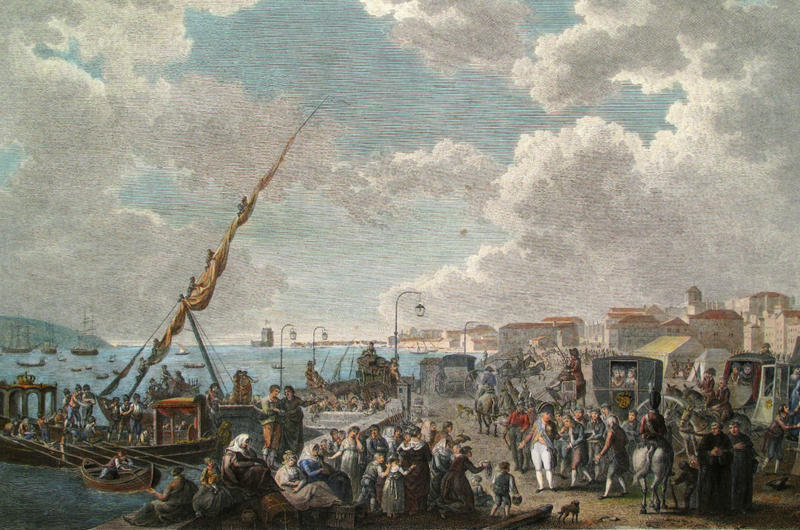
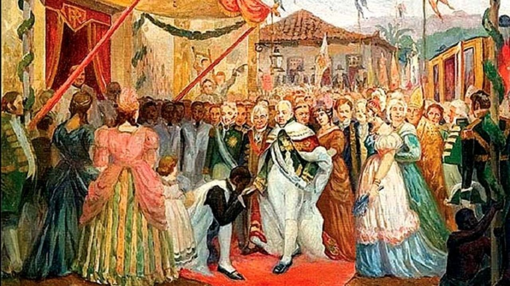

Dom Pedro I: O Protagonista da Independência do Brasil
A independência do Brasil foi um processo gradual e complexo, marcado por tensões políticas, sociais e econômicas que culminaram na separação do país de Portugal em 1822. Este artigo traça um panorama dos principais eventos que levaram à criação de uma nação independente, começando pelos antecedentes históricos até as consequências desse marco.
Antecedentes Históricos
O caminho para a independência do Brasil começou a ser pavimentado ainda no século XVIII. Durante esse período, o Brasil era uma colônia de Portugal e sofria com uma série de restrições econômicas impostas pela metrópole, como os altos impostos e o controle rígido do comércio exterior. Essas condições causavam descontentamento entre os colonos, especialmente os da elite econômica, como fazendeiros e comerciantes, que viam suas riquezas sendo drenadas pela Coroa.
Além disso, o contexto global favorecia a ideia de emancipação. A Revolução Americana (1776) e a Revolução Francesa (1789) serviram de inspiração para movimentos nacionalistas e liberais. No Brasil, revoltas como a Inconfidência Mineira (1789) e a Conjuração Baiana (1798) foram tentativas iniciais de contestar o domínio português, embora tenham sido reprimidas com severidade.
A Família Real no Brasil e o Reino Unido de Portugal, Brasil e Algarves
O contexto mudou drasticamente com a chegada da família real portuguesa ao Brasil, em 1808, fugindo das tropas de Napoleão Bonaparte, que invadira Portugal. Sob a liderança de Dom João VI, o Brasil passou a ocupar um papel central no império português. O país foi elevado à categoria de Reino Unido de Portugal, Brasil e Algarves em 1815, o que significou um certo grau de autonomia política e econômica. Isso despertou, especialmente na elite brasileira, o desejo de que essa autonomia fosse ampliada.
Contudo, a volta de Dom João VI a Portugal em 1821, após a Revolução Liberal do Porto, e a pressão para que o Brasil voltasse à condição de colônia, reacenderam as tensões. Nesse cenário, Dom Pedro, filho de Dom João VI, foi deixado no Brasil como regente, e a independência passou a ser vista como uma solução para a manutenção dos interesses locais.

O Famoso Grito do Ipiranga
Em 1822, os acontecimentos se precipitaram. A crescente pressão das Cortes portuguesas para restringir os poderes de Dom Pedro e submeter o Brasil novamente à condição colonial provocou a reação das lideranças brasileiras. Incentivado por conselheiros como José Bonifácio de Andrada e Silva e a princesa Leopoldina, Dom Pedro recusou as ordens das Cortes de retornar a Portugal e, no dia 9 de janeiro de 1822, proclamou o "Dia do Fico", afirmando sua decisão de permanecer no Brasil.
A partir desse momento, os laços com Portugal começaram a ser rompidos gradualmente. Diversas províncias brasileiras passaram a apoiar a causa da independência, e a tensão aumentou. O ponto culminante veio em 7 de setembro de 1822, às margens do riacho Ipiranga, em São Paulo, quando Dom Pedro, supostamente empunhando sua espada, proclamou o célebre "Independência ou Morte". Este ato simbolizou o rompimento oficial dos laços com Portugal.

As Consequências Imediatas
Embora o Grito do Ipiranga seja o símbolo da independência, o processo não foi simples. A guerra de independência se estendeu por mais dois anos, com confrontos militares em várias províncias, principalmente no Norte e no Nordeste, onde a resistência portuguesa era mais forte. Somente em 1824, após a adesão da província do Pará e a rendição das tropas leais a Portugal, a independência foi plenamente consolidada.
Além disso, a independência do Brasil não resultou em mudanças sociais significativas imediatas. A economia permaneceu baseada no trabalho escravo, e a nova nação manteve sua estrutura agrária, com grandes latifúndios controlados pela elite. No entanto, a independência marcou o início de um processo de construção de identidade nacional.
O Impacto na Construção da Nação Brasileira
A independência do Brasil teve profundas consequências políticas e culturais. Em 1822, o Brasil tornou-se um Império, com Dom Pedro I coroado como imperador. Isso marcou uma diferença significativa em relação ao restante da América Latina, que, em sua maioria, se organizou em repúblicas após a independência.
No plano internacional, o Brasil teve que negociar seu reconhecimento como nação soberana, o que veio gradualmente, com os Estados Unidos sendo o primeiro país a reconhecer a independência brasileira em 1824. Portugal só reconheceu oficialmente a independência em 1825, mediante pagamento de uma compensação financeira.
A independência foi um momento crucial na história do Brasil, pois deu início a um longo processo de formação de uma identidade nacional, que ainda está em construção e é influenciado por suas diversas culturas, etnias e tradições. O Brasil, assim como qualquer nação, é um conjunto de histórias, experiências e desafios. A independência foi apenas o primeiro passo em uma longa trajetória que levaria à formação do Brasil moderno que conhecemos hoje.
Cronologia dos Eventos Históricos da Independência do Brasil
- 1789: Inconfidência Mineira - Movimento que buscava a independência do Brasil.
- 1798: Conjuração Baiana - Revolta na Bahia contra as desigualdades sociais e políticas.
- 1808: A família real portuguesa chega ao Brasil fugindo de Napoleão.
- 1821: Dom João VI retorna a Portugal, deixando Dom Pedro como regente no Brasil.
- 1822: Grito do Ipiranga - Dom Pedro proclama a independência do Brasil.
- 1824: Reconhecimento da independência brasileira por diversos países, incluindo os Estados Unidos.